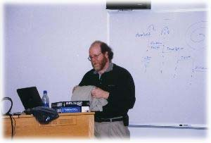
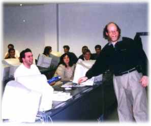

|
 |
 |
|
 |
 |
11/17/1999
The November 17 meeting was the biggest in the history of the club! More than
40 students and faculty members gathered to listen to Todd Oberman from
Microsoft.
Todd is one the highest ranking Microsoft officials in St. Louis and was very
generous in devoting several hours of his personal time to discuss the
theoretical foundations behind Microsoft's approach to project management. The
presentation was of extraordinary value for our students, who'd normally pay
several hundred dollars to attend a similar class in the "real world" (the
presentation will be shortly posted on the Club's website for download).
The discussion continued for quite a while after the meeting was over,
because of questions from students and discussion with our IS faculty members.
After Todd's presentation, Brian Lawton introduced a recruiter from SSE Inc.,
one of the leading Microsoft partners in the St. Louis area. Our Club members
were given an opportunity to have a "shadowing d ay" in SSE where they'd spend
several hours in the "real world" of IT and find out if this industry is right
for them. ISPC plans to have more arrangements like this in the future.


|
 |
 |